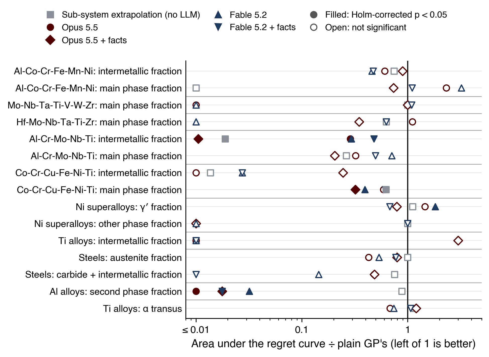

MATERIALS SCIENCE & ENGINEERING
TEXAS A&M UNIVERSITY
Department of Materials Science and Engineering
57

Better than plain GP, of 15
extrapolation: 2
Opus 5.5: 2, with facts 3
Fable 5.2: 3, with facts 2
worse: Fable 5.2 on Ni γ′,
1.82 × the plain GP's area